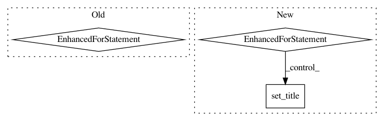

0ac7cecce4f147011037fcb79dfd57867b8329a8,nilmtk/metergroup.py,MeterGroup,plot_good_sections,#MeterGroup#Any#Any#Any#,1393
Before Change
meters.sort(key=meter_sorting_key, reverse=True)
labels = []
for i, meter in enumerate(meters):
good_sections = meter.good_sections(**kwargs)
ax = good_sections.plot(ax=ax, y=i)
labels.append(getattr(meter, label_func)())
// Y tick formatting
n = len(meters)
ax.set_yticks(np.arange(0, n) + 0.5)
def y_formatter(y, pos):
try:
After Change
meter_ids = [ElecMeterID(instance=meter_instance,
building=building_id.instance,
dataset=building_id.dataset)
for meter_instance in appliance.metadata["meters"]]
if appliance.n_meters == 1:
// Attach this appliance to just a single meter
meter = self[meter_ids[0]]
if isinstance(meter, MeterGroup): // MeterGroup of site_meters
metergroup = meter
for meter in metergroup.meters:
meter.appliances.append(appliance)
In pattern: SUPERPATTERN
Frequency: 4
Non-data size: 3
Instances
Project Name: nilmtk/nilmtk
Commit Name: 0ac7cecce4f147011037fcb79dfd57867b8329a8
Time: 2014-12-19
Author: jack-list@xlk.org.uk
File Name: nilmtk/metergroup.py
Class Name: MeterGroup
Method Name: plot_good_sections
Project Name: rodluger/starry
Commit Name: 03b04a9921afe6953d460c49e39067326e8a73a8
Time: 2018-05-10
Author: rodluger@gmail.com
File Name: tex/figures/autodiff.py
Class Name:
Method Name:
Project Name: BindsNET/bindsnet
Commit Name: 8cb6cddd6d4a6c85e651ff40073cab446f93eb84
Time: 2018-03-30
Author: djsaunde@umass.edu
File Name: bindsnet/analysis/plotting.py
Class Name:
Method Name: plot_voltages
Project Name: pymc-devs/pymc3
Commit Name: a6006bd5af38fa2a7d336ce0f1629671a907df57
Time: 2013-05-12
Author: chris.fonnesbeck@vanderbilt.edu
File Name: pymc/plots.py
Class Name:
Method Name: autocorrplot